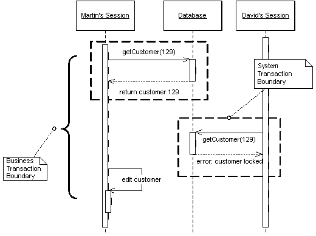

Pessimistic Offline Lock (Пессимистичная блокировка)

Паттерн проектирования Pessimistic Offline Lock
Описание Pessimistic Offline Lock
Предотвращает конфликты между конкурирующими бизнес-транзакциями, разрешая доступ к одинм данным только одной бизнес-транзакции за раз.
Так как локальная конкуренция включает в себя работу с данными бизнес-транзакции, которая содержит несколько запросов, то наиболее простой подход был бы держать транзакцию открытой на протяжении всей бизнес-транзакции. Но, к сожалению, этот подход не всегда работает хорошо, потому что системы управления транзакциями не заточены под работу с длинными транзацкиями. По этому приходится делать несколько системных транзакций, а остальную конкуренцию отслеживать самостоятельно.
Первый из подходов, который следует попробовать в этом случае - Optimistic Offline Lock. Однако, этот паттерн имеет свои недостатки. Например, если несколько людей пытаются получить доступ к одним данным в одной бизнес-транзакции, один из них легко сможет сделать commit, но остальные получат конфликт и не смогут продолжить работу. Из-за того, что конфликты определяются только в конце бизнес-транзакции (а не предотвращаются), жертвы будут делать все действия тразакции и в последний момент обнаружат, что вся их работа псу под хвост. Если так будет происходить, системы с длинными транзакциями вскоре станут непопулярны.
Pessimistic Offline Lock предотвращает конфликты, исключая их вообще. Этот паттерн заставляет бизнес-транзакцию накладывать блокировку на ту часть данных, с которыми она работает, так что чтобы начать работу с данными другой пользователь сначала ждёт, пока данные освободятся.
Использована иллюстрация с сайта Мартина Фаулера.